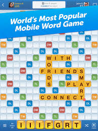
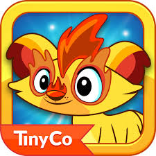
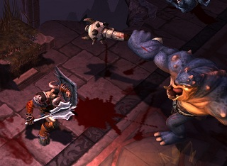
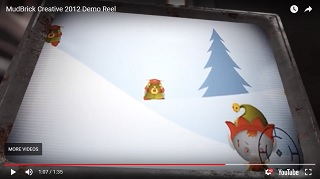
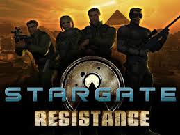
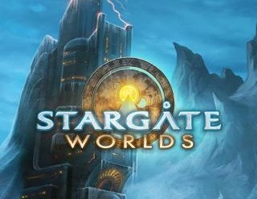
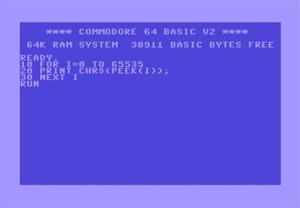

I'm busy rebuilding my website. It used to be a Flash / FLEX monster, but I want something more manageable.
The new website will all be hand-spun, and be developed using GIT for version control.
Words With Friends
Words With Friends is one of the longest-lived mobile games ever, a full decade in and still going strong. You might be surprised at how much brand new code goes into such an old game!
I've been on the Words team for five years, through two major rewrites and re-releases. I am the team UI specialist, and wrote the 'Home' architecture that manages all of our custom scene transitions.
Tiny Monsters
Available now!
Tiny Monsters is a mobile game for iOS and Android devices. It runs on TinyCo's cross-platform game engine, Griffin.
I created the shared build script that is now used for all of TinyCo's new Griffin games.
Warrior's Lair
Cancelled
Warrior's Lair was a social action RPG for the PS Vita and PS3. You had a lair that you expanded and decorated with the spoils of your victories and remains of your enemies.
I created the custom visual scripting system used for all level and cutscene scripting.
During most of development, the game was called Ruin, so you will find a good deal of media searching under that name.
Killer Kristmas
Released 1. Dec 2010
Killer Kristmas was a free Flash game where you save Christmas by killing zombie elves. It was commissioned by the web development studio Mudbrick Creative as their yearly "silly" project.
Killer Kristmas was programmed entirely by me over the course of a month, and was my first complete Flex application. Unfortunately, Mudbrick is no longer hosting it. Probably because they're no longer in business.
Stargate: Resistance
Released 20. Feb 2010.
Stargate: Resistance was a class-based team shooter based on the Stargate IP. Programmed using the Unreal Engine. Unfortunately, due to corporate politics and the resultant lack of funding, the SG:R servers shut down after only a single year.
As an interface programmer, I was responsible for 90% of the shipped UI and the UnrealScript that powered it, in addition to the usual miscellany.
Stargate Worlds
Cancelled
Stargate Worlds was an MMO based on the Stargate IP. Some of the technologies involved included Unreal 3, Big World, and CEGUI. Unfortunately, it never made it to market. The project was back-burnered in favor of the quicker-to-market game Stargate: Resistance. Unfortunately, corporate politics and shortage of funding resulted in the eventual cancellation of the project, even though it had been in beta.
As a UI Programmer, I had a hand in almost every piece of the 2D UI, and was responsible for the entire custom, moddable UI and scripting system.
Birth of a Game Maker
When I was 8, my dad bought a used Commodore 64 from a friend. He was a computer programmer back then, so the first thing he showed me was how to use four different commands: print, input, if-then, and goto. I wrote my very first game on that silly machine with those four commands. So at age 8 I was writing simple text games. Not much more than Choose-Your-Own-Adventure style stories, but hey, what do you expect from an 8 year old?
My First Handheld Games
Just a few years down the road I was taking a math class in junior high. We got some TI-83 graphing calculators, and I quickly discovered that you could make games for those too. In 6th grade I made a LORD clone that quickly infiltrated every calculator on campus. In 7th grade we had TI-85's, so I wrote another game. This one was a LORD-style game where you piloted giant robots. Once again, my game was the most popular one at the school.
Just so you can appreciate how much work goes into writing games for a TI calculator, here are some of the limitations I had to work with.
* Screen resolution: 16 x 8 characters
* Absolutely NO indentation (debugging was a nightmare)
* 64 kb memory, of which 1/3 was required for system operation
* No saving of variables (I got around this by using matrices)
Considering how little I had to work with, I'm pretty proud of the games I made. The only pity is that the school wiped calculator memory at the end of each year, so those games are lost to the world. But hey, it was better than math class!
A Blue Ribbon
I graduated from high school in 3 years and moved on to college at age 17. Unfortunately, the college I picked didn't do any game programming beyond Tic-Tac-Toe, Mancala, and Chess, so I was on my own. Feeling a bit nostalgic about my old text games, I started writing an ASCII art editing tool, txPaint. You can find it under Projects.
Another reason I was doing ASCII art is that I was having trouble wrapping my mind around the idea of alpha transparency (good thing I got over that). I thought I'd have better luck with text. Well, it turns out that I needed to know alpha transparency to implement the copy/paste functionality for txPaint, so I broke through my 2D graphics learning block by doing ASCII art! Kind of nutty, eh?
So what's this blue ribbon, you ask? Well, I got a call from my brother Beandog. He said he was entering a game programming contest, and one of the rules is that you could only use ASCII art! Can you say "txPaint?" I drove over to his apartment, and 3 hours later we had produced a game that won 1st prize in GameDev.net's 3 Hour Game Development Challenge V! That game is Star Cowboys. You can find Star Cowboys under Projects also.
Getting Serious About Games
I worked as a programmer and studied Computer Science at that college for almost 3 years when I got a sign it was time to move on. A Professor made the comment, "I wish we could throw all computer games in a pile and burn them." I knew I was in the wrong place.
I finished the semester (and aced that prejudiced teacher's class), and then transferred to a "better place." The University of Advancing Technology (UAT) was my new home. There I studied for the Game Programming degree and finished with my Bachelor's in 2009.
Making a Living of it
One of the graduation requirements for UAT was the completion of an industry internship. I landed a job doing UI work for the Stargate Worlds MMO with Cheyenne Mountain Entertainment during my senior year and got hired on full-time when the internship ended. I had a hand in almost all of the 2D UI for the game before the project got put on the back burner.
After SGW, I was hired to do the UI for Stargate: Resistance, this time using Unreal. On 10. Feb 2010, SG:R shipped! I finally got a shipped title with my name in the credits.
Since then I've dabbled in Flash / Flex development with the free game Killer Kristmas (sadly no longer available).
Going Console
After my stint in web development, I was hired on by Idol Minds (now Deck Nine) to make a PS3 and PS Vita game. That was the social action RPG called Warrior's Lair.
While at Idol Minds, I created an entire custom visual scripting system that was used for all level and cutscene scripting on the project.
Unfortunately, funding was cut for the project in early 2012, and so I found myself looking for work again.
Move to Mobile
I made a double move for my next job, from Colorado to California, and from console to mobile. The company was TinyCo, and my project was Tiny Monsters. At TinyCo I helped improve the parallax support for their custom cross-platform game engine, Griffin, and of course built plenty of UI. At least, until TinyCo over-extended itself and had to lay off about half of their staff, including me.
That very night, I went home and applied to around fifty different jobs. At about 9pm, a recruiter from Zynga called me, and two weeks later I was working on Words With Friends as an iOS engineer. I have now worked on Words With Friends for five years, through two major re-releases, and am the UI specialist for the team. You might be surprised how much new code goes into a 10 year old game!